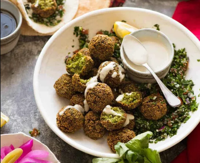

Falafel Recipe

Description
Every chickpea dreams of being transformed into a falafel! Ultra crispy on the outside, moist and fluffy on the inside, everybody loves them but few know how easy they are to make. This is an easy to follow falafel recipe. The best part is breaking open the golden brown balls to reveal the dazzling green insides. Dip them in tahini sauce and pop them straight in your mouth, or make wraps!
Ingredients
Falafel
- 225g dried chickpeas, don't use canned one!
- 1 cup parsley leaves, roughly chopped
- 1 cup coriander/cilantro leaves, roughly chopped
- 6 scallions/shallots, white and light green only finely chopped
- 2 cloves of garlic, minced
- 1 teaspoon cumin
- 1/2 teaspoon coriander
- 1 1/2 teaspoons salt
- 1/2 teaspoon baking powder
- 4 teaspoons flour, plain/all purpose OR chickpea flour
- 5 tablespoons water
For Frying
Tahini Sauce
- 4 tablespoons tahini
- 2 tablespoons lemon juice
- 4 tablespoons water
- 1/4 teaspoon salt, or to taste
Steps
Falafel
- Place chickpeas in a large bowl and pour over plenty of cold water. Leave to soak 12 + hours (even 2 days is fine).
- Drain chickpeas well. Place in food processor, add remaining Falafel ingredients.
- Blitz for 2 to 3 minutes on high, scraping down sides as necessary, until the chickpeas are very small grains. Mixture should look like smooth guacamole from the outside.
- Scoop up heaped tablespoons and shape into balls (or dome, disc or torpedo), place on a tray. Should make around 20, about 2.5cm / 1" wide.
- Refrigerate for 30 minutes.
- Pour oil in a skillet or large pot - at least 1.7 cm / 2/3" depth (Note 4). Heat on medium high to 180 - 190C / 355F (or drop a bit in, should sizzle energetically).
- Place a ball in a large spoon (or tongs) and slide ball in. Cook in batches for around 4 minutes, using 2 forks to roll, until deep golden and super crusty on the outside.
- Drain on paper towels. Repeat with remaining falafel.
- Serve fresh out of the fryer with Tahini sauce! Make falafel wraps or plates with tabbouleh, tomato, onion, and Tahini sauce.
Tahini Sauce
- Combine tahini and lemon juice, and mix well. The mixture will stiffen.
- Stir in the water 1 tbsp at a time and it will loosen again. The final consistency should be like a thick drizzle sauce. Season to taste with salt.
Source: RecipeTin Eats - Falafel Recipe
Back to Home